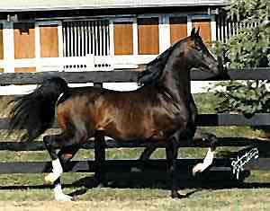

MCA CHAZZ ADDITIONAL INFORMATION
MCA Chazz is a 15.3 H gorgeous chestnut stallion that has excelled in both the Halter and English Performance arenas, a very rare accomplishment for most horses in today's competition. He was 1996 US National Top Ten Futurity Colt, 1996 Canadian National Top Ten Stallion, and 2000 US National Top Ten Open English Pleasure. He consistently sires size, smooth solid bodies, athletic ability, and trainability.
When I first saw MCA Chazz, I was in awe of his beauty, his excellent conformation, stunning coloration, and his charisma. His movement was inspiring. His disposition was charming and he was truly a dream horse. I knew, from the first moment I laid eyes on him, that he was destined for my breeding program and I had to have him. So, in 1999, I purchased the almost perfect Arabian horse, the ideal, with all those exceptional qualities that one looks for in a breeding stallion and a pedigree to match. A horse like MCA Chazz only comes along once in a great while, if ever, and owning him is like having a little piece of heaven while living here on earth. I hope you enjoy admiring him as much as we do!

Chazz's Sire: Huckleberry Bey++
ACCOMPLISHMENTS
MCA Chazz is a “halter horse” that can also win under saddle, which is almost an impossible feat in today’s competition. Chazz achieved both at the national level. He was US National & Canadian Top Ten Halter Stallion as a 3 year old, and US National Top Ten Open English Pleasure 4 years later. Quite an accomplishment!
1995 - Chazz was first shown as a 2 year old colt at the ATAHC Shootout where he won the Arabian Stallion Breeding class and also the Championship.
May 1996 - Spindletop Arabian Show, Katy, Texas.
1st place - Arabian Stallion Breeding class and the Championship
August 1996 - Canadian Nationals - Canadian National Top Ten Futurity Breeding Colt.
October 1996 - US Nationals - US National Top Ten Futurity Breeding Colt.
April 2000 - Chazz made his debut under saddle.
Lonestar Classic Show, Austin, Texas.
1st place - Arabian English Pleasure Class and the Championship
June 2000 - Region 9 Championship Show - Fort Worth, Texas. Champion - Open English Pleasure Division.
October 2000 - US Nationals- US National Top Ten Open English Pleasure in Lexington, Kentucky…. against 28 other great English horses.
|